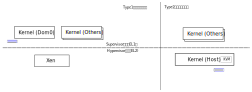
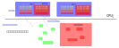

权限设计¶
权限设计给予不同的软件部件访问整个服务器不同的资源的能力。这种能力从主控CPU开 始，为不同的软件部件的设定身份，然后再把不同的硬件资源的使用能力赋予这些角色。
鲲鹏920的主控CPU服从ARMv8的标准，先控制了主控CPU的软件角色，再由这些决策分配其 他计算或者IO单元的访问权限，从而让服务器的管理员可以基于不同权限的软件对象把设 备的控制权分发出去。
鲲鹏920的主CPU核包括4个特权级2个安全模式，我们先从CPU的控制开始理解这个安全模 型：
CPU特权级¶
CPU特权级是CPU的一种工作状态，CPU被切换到这个工作状态，才能使用CPU特定的功能。
大部分通用芯片都使用这样一种管理结构：CPU启动的时候先进入最高特权级，这个特权 级的软件设定各种资源的可访问权限，把下一个特权级可以使用的资源放进独立的隔离 空间，设定本特权级的调用入口，然后放权进入下一个特权级。这样，最初在这个高特权 级的部件就拥有控制本层的权限了，图示如下：
要注意的是，在任何一个时刻，CPU是完全被某个特权级的某部分软件占据的。另外，软 件代码和特权级是独立的概念，同一个软件部件可以在不同的时刻工作在不同的特权级。 我们说软件的概念是多维的，这是一个现实的例子。
鲲鹏920包括4个特权级，这兼容ARMv8的定义，但ARMv8对实现多少个特权级是可选的，鲲 鹏是定义允许的所有特权级了。这一特点在后面的叙述中会经常出现，我们会聚焦到介绍 鲲鹏的实现，请读者注意。
鲲鹏920包含的4个特权级是：
- EL0：用户特权级，用于运行用户程序
- EL1：内核特权级，用于运行操作系统内核
- EL2：Hypervisor特权级，用于运行虚拟机管理器
- EL3：安全管理特权级，用于运行安全管理器
所以一种基本的鲲鹏920启动过程是这样的：
- 芯片复位，CPU进入EL3模式，从既定的入口开始执行代码，由Boot Loader软件控制
- Boot Loader初始化，设定后EL3的进入入口，加载Hypervisor，降低权限到EL2，运行 Hypervisor
- Hypervisor初始化，加载操作系统内核，降低权限到EL1，运行操作系统内核
- 操作系统内核初始化，加载第一个进程，进入调度，调度到这个进程的时候，降低权限 到EL0，运行用户进程
这样一个结构，先被在高特权级的初始化的软件控制了下一级的资源，下一级要访问这些 资源就只能发起越级调用，这个控制权就回到高级的软件部件上了。
另一种回到高特权级的方式是外部中断，这个控制全仍由高一级的特权级控制，高特权级 控制什么中断在本级处理，则无论当前CPU被什么权限的软件部件控制，发生中断了，CPU 都会回到指定特权级的固定入口，把控制权交还给这个软件部件。
高特权级的软件可以创建多个低特权级的软件实例，每次进入高特权级的软件的时候，它 都可以决定具体把哪个实例投入运行。这样，即使只有一个CPU核，我们都可以有多个安全 区，虚拟机或者进程。图示如下：
如前所述，在交流中我们会说“有多个软件实例运行在某个CPU上”，但其实在某个时刻， CPU只会处于某个软件部件的执行状态上。但对于多核的CPU，确实同一时刻有多个软件实 例在同时工作。
SMTSimultaneous Multi-Threading，是一种硬件设计概念。理论上多核的CPU为每个CPU设计设计独立的硬件，但由于很多时候CPU的执行部件会闲置，部分CPU设计者会让部分CPU核共享硬件，这类似软件的多线程，让多个CPU共享同一套硬件。对软件来说SMT和多CPU核在功能上没有区别，因为这都是CPU内部的问题。但对调度器来说可能是有区别的，因为如果这是互相独立的硬件，在一个CPU核忙的时候，把软件实体调度到另一个核上是有意义的，而在这两个核其实是SMT硬线程的时候，就没有意义了。
但如果我们有多个CPU核或者SMT，每个CPU核都可以运行在某个软件部件的执行状态上：

当然，以上只是理论，在实际中会有不同的变化。我们看一个典型的实际例子。一种常见 的软件组合是这样的：
- Boot Loader：ATF，UEFI，Grub
- 操作系统内核：Linux Kernel
- 用户程序：glibc为基础的用户应用
其中ATF是ARM Trust Fireware，提供基本的安全调用封装，大部分厂商都会对这个软件 进行修改，以配合自己的解决方案。
UEFI是标准的BIOS软件，完成硬件最基本的初始化
Grub是二级Boot Loader，它的作用是降低UEFI的复杂度，做一些更高级的初始化。很多 定制化的方案甚至可以没有它，UEFI也是可以直接启动Linux Kernel的。但有了Grub，可 以：
- 做多选菜单：选择启动不同的Linux Kernel
- 支持更多的文件系统：Linux Kernel保存在文件系统中，Boot Loader要读这个文件就 需要认识对应的文件系统格式
- 修改启动参数等Grub已经完成得很成熟的功能，等等
现代软件方案的常态，很多时候不是什么方案是“最合理”的，而是什么方案是“开发成本 最低”和“最成熟”的。
基于这个方案启动鲲鹏920，首先是EL3，进入的是ATF，之后权限降低到EL2，进入UEFI， Grub，然后启动Linux Kernel，按虚拟化模式，这有可能在EL1也有可能在EL2（后面单独 介绍），Linux Kernel根据虚拟化方案的模式，决定继续停留在EL2还是主动降权到EL1， 完成内核的初始化，最后调度init进程投入运行，再度降权到EL0。
这个方案仍和前面介绍原理是接近的，但并不完全一致。
Hypervisor模式¶
GNU/Linux有两个典型的虚拟化解决方案，Xen和KVM，分别代表两种不同的Hypervisor设 计方案，有人把这两种模式分别称为type1和type2模式。
Type1模式，以Xen为代表，Hypervisor是一个独立的部件，仅完成虚拟机调度等基本功能 。然则它不包含驱动程序，不能访问IO设备，这需要使用其中一个OS用作IO驱动的代理， 在Xen中，这个OS称为Dom0 OS。这种工作方式的优势在于Hypervisor比较简单，更容易控 制Hypervisor的质量，缺点是IO需要经过调度到Dom0，有些应用场景会影响性能。
Type2模式，以KVM为代表，Hypervisor是OS的一部分，用Xen的概念来理解，第一个启动 的Linux Kernel就是Dom0和Hypervisor。这种工作方式的优劣势和Type 1是相反的。

另外，Type2需要硬件一定程度的支持，因为EL1可以访问的资源，可能是这个虚拟机专有 的，如果OS Kernel和Hypervisor是一体的，当内核工作在EL2的时候，可能无法访问EL1 的部分专有寄存器。ARMv8的VHE，Virtual Host Extension，是为解决这个问题而设计的 ，鲲鹏920支持这个扩展。这一点可以从Linux启动记录中观察到：:
CPU features: detected: Virtualization Host Extensions
所以，在鲲鹏920上，如果使用Xen，Grub会启动Xen的Hypervisor，Xen工作在EL2，然后 降低权限到EL1，在跳转到Linux kernel。如果使用KVM，Grub直接启动Linux Kernel， Kernel会工作在EL2模式。VHE模式会保证Kernel在EL2上也可以正常工作。
相关的Linux代码，以主线5.5为例，无论作为硬件启动，还是做为虚拟机启动，OS的入口 都在前一章介绍Linux内核构架的时候提到的那样，都在下面位置上：:
arch/arm64/kernel/head.S:_head
这个入口一开始就调用这个函数：:
ENTRY(stext)
bl preserve_boot_args
bl el2_setup // Drop to EL1, w0=cpu_boot_mode
adrp x23, __PHYS_OFFSET
and x23, x23, MIN_KIMG_ALIGN - 1 // KASLR offset, defaults to 0
bl set_cpu_boot_mode_flag
bl __create_page_tables
/*
* The following calls CPU setup code, see arch/arm64/mm/proc.S for
* details.
* On return, the CPU will be ready for the MMU to be turned on and
* the TCR will have been set.
*/
bl __cpu_setup // initialise processor
b __primary_switch
ENDPROC(stext)
el2_setup根据系统寄存器的状态判断当前是EL1还是EL2，以及CPU是否支持HVE，决定最 终把内核运行在Hypervisor模式，还是Supervisor模式，或者作为一个Guest OS运行。
安全模式¶
安全模式同样是CPU（核）的一种状态，其原理和特权级的作用原理是一样的。但这个设 计的不是为了控制计算子系统的权限，而是为了控制外设（包括内存）的权限。
鲲鹏提供安全（S）和非安全（NS）两种状态，当CPU处于S状态的时候，发出的所有地址 请求都会包含安全标记。处于安全区的内存或者外设会拒绝所有没有包含这个标记的请求 ，这样就在物理上保证了，NS软件不能访问处于安全区的内存或者外设。这为硬件设计者 提供了一个机会，把整个系统分隔成安全和非安全两个部分，而软件上，只有EL3才能进 行NS和S状态的切换。只要控制好这个切换过程，就控制住了安全软件和非安全软件之间 的关系了。
安全模式和特权级是正交关系，每个安全模式都可以有自己的分层关系。这个关系图示如 下：

和特权级一样，来自安全区的设备中断也会引起CPU的安全模式切换。
运行在S状态中的安全软件，既不是Boot Loader的一部分，也不是Linux Kernel的一部分。 非安全区的Linux Kernel不包含对应的代码，Linux Kernel（主线v5.5的代码为准，下同），把这些请求封装成了PSCI调用，封装在 arch/arm64/kernel/psci.c中了。但总的来说，主线的Linux Kernel并没有包含多少如何 使用安全OS的设计，因为这是解决方案相关的，取决于如何设计安全方案，大部分方案提 供商也不愿意对外公开自己的设计细节。
PSCIPower State Coordination Interface是ARM平台的一个CPU功耗状态控制接口。这个接口并非ACPI或者Device Tree上的重新发明，只是CPU的功耗状态在ARM平台的定义中，大部分只能通过安全模式才能工作，所以，需要定义一个OS和安全软件之间的软件接口而已。
todo：ATF软件对外有没有提供？如果有提供在这里。 todo: 这里写的逻辑似乎有些错位。
侧信道攻击¶
上面介绍了CPU通过特权级和安全模式制造隔间的行为，这保证了明面上的安全。但安全 漏洞常常出现在明面期望的运行模型之外。侧信道攻击也是这样一个问题，虽然在设计者 表面设计的“规矩”中，不同隔间之间是隔离的。但每种具体的实现有会有边缘效应，这种 效应就有可能产生意向不到的信息泄露。比如说，我们认为设备和CPU之间是有IOMMU隔离 的，如果操作系统没有授权，插入恶意的设备就可能获得内核的信息（比如用户密码）， 但CPU运行会产生电磁波，如果可以控制用户态运行的程序，发出特定的请求，引起内核 访问这个信息，同时监控CPU的行为，就有可能捕获这个信息。这种类型的攻击，就称为 侧信道攻击。
今年比较有名的一些攻击，比如Meltdown和Spectre，都利用了CPU的预测执行特性：CPU 由于内部计算单元使用不充分，会尝试把多个分支同时提前执行，等到判断出哪个分支是 实际的分支，就放弃其他分支的中间结果。这种执行实际会改变Cache的内容，在低特权 级的程序可以通过诱导其他高特权级的程序预测访问无权访问的内容，并用这些内容作为 下标访问Cache（这需要在内核制造“内奸”，我们不深入讨论具体技术），未来通过不同 Cache的访问速度不同就可以得到这个值是多少了。
本书不是讨论安全攻击的具体方法，我们只是希望从另一个角度告诉读者，攻击是可以如 何发生的，不要把安全的希望完全寄托在规矩上。